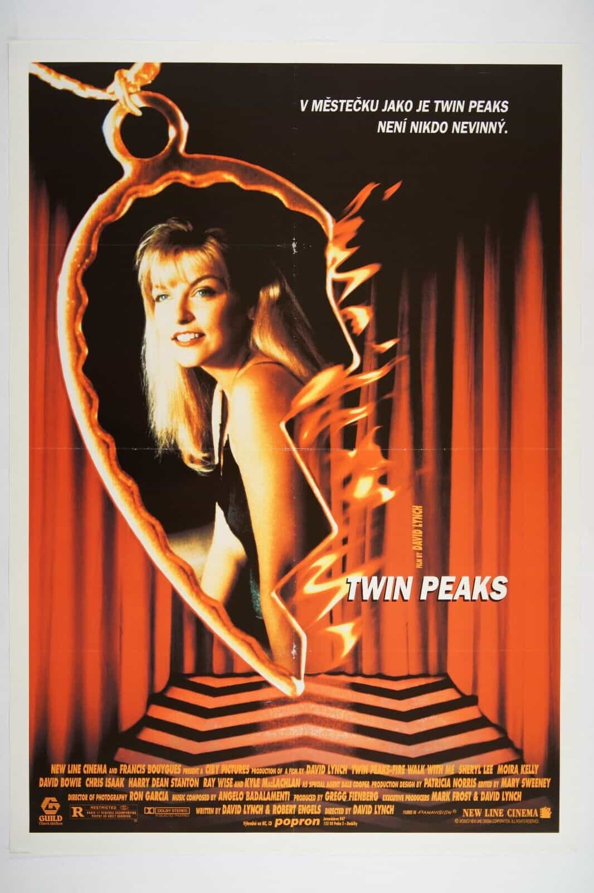

Twin Peaks: Fire Walk With Me
1992
Twin Peaks: Fire Walk With Me has a higher barrier of entry than the other movies on this list since it requires having watched Lynch's TV show (one of my all-time favorites) Twin Peaks. Still, this movie touches on universal themes like the corruption of innocence in a way that is more complex and satisfying than other films. Sheryl Lee's Laura Palmer, the film's protagonist, isn't the eternally innocent woman. She's complex, confused, and wants what we all want, but she's not scared to show it. You should definitely watch Twin Peaks anyway, but this movie is essential viewing once you do.